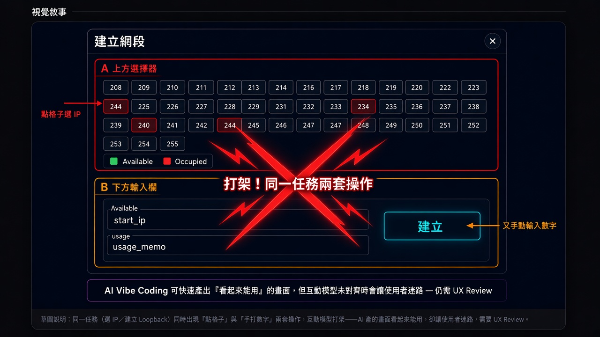
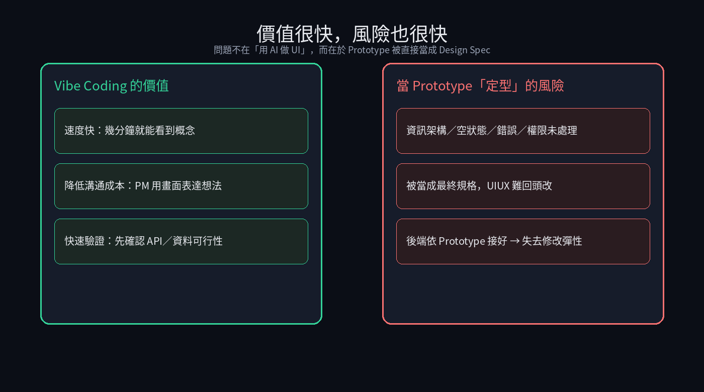
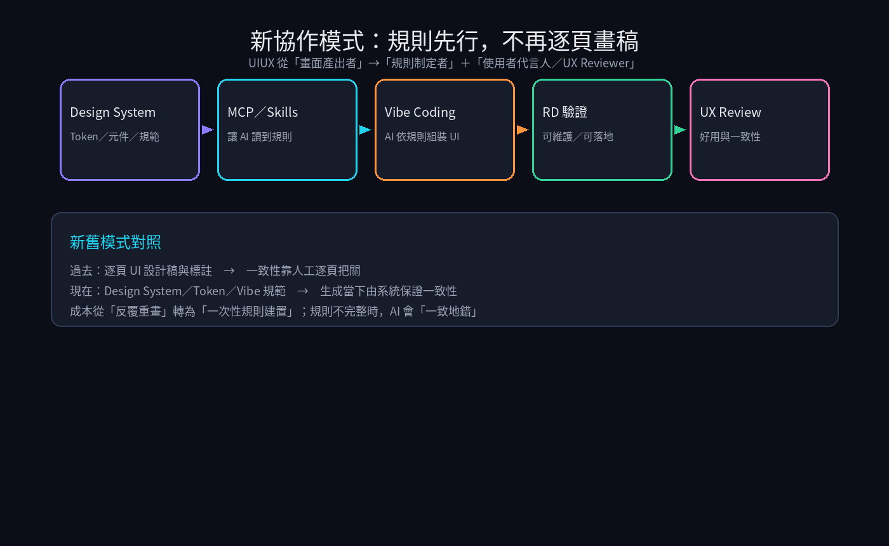
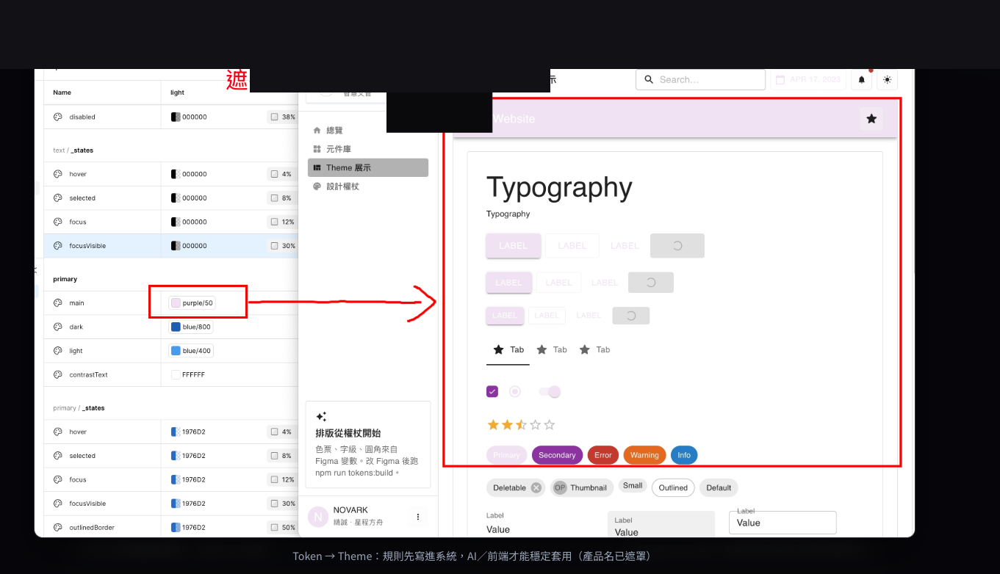

問題
Vibe Coding 能快速做出可操作 Prototype，但一旦被當成最終規格，資訊架構、空狀態、錯誤與權限等體驗問題會被鎖死，UIUX 難回頭改。
解法
不逐頁畫稿，改為規則先行：Design System／Token → MCP／Skills 讓 AI 讀規則 → Vibe Coding 組裝 → RD 驗證 → UIUX 做 UX Review。
成果
UIUX 交付物改為可執行規則＋使用者角度驗收；一致性由系統保證，成本從重畫轉為建規則。
- 定義新協作模型：UIUX 交付物從「每頁畫面」變為「可執行的設計規則」+「使用者角度驗收」
- 新舊模式對照：一致性改由系統保證，成本從反覆重畫轉為一次性規則建置
- 指出風險：規則不完整時，AI 會「一致地錯」——因此規則與 UX Review 不可省
視覺敘事




